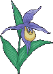

stumbled across this thing during my philosophy class when I was working on a project about love.
it's something i really like to read whenver i am feeling really down, and i just cant get out of my bed.
It doesn't interest me what you do for a living.
I want to know what you ache for,
And if you dare to dream of meeting
Your heart's longing.
It doesn't interest me how old you are.
I want to know if you will risk looking like a fool
For love, for your dream,
For the adventure of being alive.
It doesn't interest me what planets are squaring your moon.
I want to know if you have touched the center of your own sorrow,
If you have been opened by life's betrayals,
Or have become shriveled and closed from fear of further pain.
I want to know if you can sit with pain,
Mine or your own,
Without moving
To hide it or fade it or fix it.
I want to know if you can be with joy,
Mine or your own,
If you can dance with wildness and let the ecstasy fill you to the tips of your fingers and toes
Without cautioning us to be careful, be realistic, to remember the limitations of being human.
It doesn't interest me if the story you are telling me is true.
I want to know if you can disappoint another to be true to yourself,
If you can bear the accusation of betrayal and not betray your own soul.
I want to know if you can be faithless and therefore be trustworthy.
I want to know if you can see beauty
Even when it is not pretty every day,
And if you can source your own life
From its presence.
I want to know if you can live with failure,
Yours and mine,
And still stand on the edge of a lake and shout to the silver of the full moon,
"Yes!"
It doesn't interest me to know where you live or how much money you have.
I want to know if you can get up after the night of grief and despair,
Weary and bruised to the bone,
And do what needs to be done for the children.
It doesn't interest me who you are, how you came to be here.
I want to know if you will stand
In the center of the fire with me
And not shrink back.
It doesn't interest me where or what or with whom you have studied.
I want to know what sustains you
From the inside
When all else falls away.
I want to know if you can be alone
With yourself,
And if you truly like the company you keep
In the empty moments.
The Invitation By Oriah Mountain Dreamer
